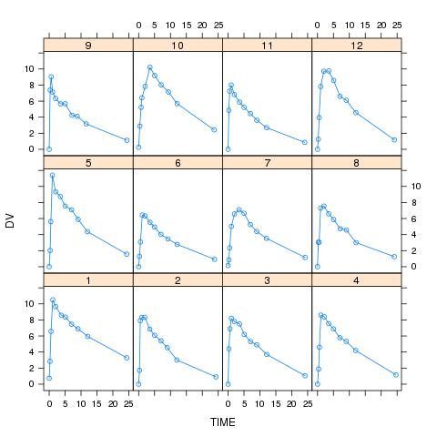

https://github.com/asancpt/edison-nmw
license: GPL-3
NONMEM Workshop 2017에서 사용된 nmw 패키지를 사용한 Edison 사이언스 앱입니다.
A table (head) and a figure of input dataset is shown below.
kable(inputFirst, format = "markdown")
| name | value |
|---|---|
| Dataset | Theoph |
| Method | ZERO |
| nTheta | 3 |
| nEta | 3 |
| nEps | 2 |
| THETAinit | 2, 50, 0.1 |
| OMinit | 0.2, 0.1, 0.1, 0.1, 0.2, 0.1, 0.1, 0.1, 0.2 |
| SGinit | 0.1, 0, 0, 0.1 |
kable(head(DataAll, n = 20), caption = "input data", format = "markdown")
| ID | TIME | DV |
|---|---|---|
| 1 | 0.00 | 0.74 |
| 1 | 0.25 | 2.84 |
| 1 | 0.57 | 6.57 |
| 1 | 1.12 | 10.50 |
| 1 | 2.02 | 9.66 |
| 1 | 3.82 | 8.58 |
| 1 | 5.10 | 8.36 |
| 1 | 7.03 | 7.47 |
| 1 | 9.05 | 6.89 |
| 1 | 12.12 | 5.94 |
| 1 | 24.37 | 3.28 |
| 2 | 0.00 | 0.00 |
| 2 | 0.27 | 1.72 |
| 2 | 0.52 | 7.91 |
| 2 | 1.00 | 8.31 |
| 2 | 1.92 | 8.33 |
| 2 | 3.50 | 6.85 |
| 2 | 5.02 | 6.08 |
| 2 | 7.03 | 5.40 |
| 2 | 9.00 | 4.55 |

PREDFILE <- ifelse(NMDataset == "Emax", "03-Emax/PRED.R", "04-THEO/PRED.R")
source(PREDFILE)
FGD <- deriv(expr = ~ DOSE/
(TH2*exp(ETA2)) *
TH1*exp(ETA1)/
(TH1*exp(ETA1) - TH3*exp(ETA3)) *
(exp(-TH3*exp(ETA3)*TIME)-exp(-TH1*exp(ETA1)*TIME)),
namevec = c("ETA1","ETA2","ETA3"),
function.arg = c("TH1", "TH2", "TH3",
"ETA1", "ETA2", "ETA3",
"DOSE", "TIME"),
func=TRUE,
hessian=TRUE)
H <- deriv(~F + F*EPS1 + EPS2, c("EPS1", "EPS2"),
function.arg=c("F", "EPS1", "EPS2"),
func=TRUE)
InitPara <- nmw::InitStep(DataAll,
THETAinit=THETAinit,
OMinit=OMinit,
SGinit=SGinit,
LB=LB,
UB=UB,
Pred=PRED,
METHOD=METHOD)
(EstRes = EstStep()) # 0.6200359 secs, 0.4930282 secs
## $`Initial OFV`
## [1] 141.3076
##
## $Time
## Time difference of 10.50427 secs
##
## $Optim
## $Optim$par
## [1] 0.560417594 -0.167835388 0.148962363 0.995143051 0.056166719
## [6] 0.151227212 -1.032468524 0.005776728 0.110936466 -0.956899772
## [11] -0.205559309
##
## $Optim$value
## [1] 57.32106
##
## $Optim$counts
## function gradient
## 74 74
##
## $Optim$convergence
## [1] 0
##
## $Optim$message
## [1] "CONVERGENCE: REL_REDUCTION_OF_F <= FACTR*EPSMCH"
##
##
## $`Final Estimates`
## [1] 3.16946754 38.25213461 0.10501808 1.19823326 0.13747849
## [6] 0.03134899 0.37015671 0.04340042 0.25068582 0.01207782
## [11] 0.05427434
(CovRes = CovStep())
## $Time
## Time difference of 3.911192 secs
##
## $`Standard Error`
## [1] 0.641076545 1.685217849 0.023072024 0.420617313 0.082197499
## [6] 0.019812976 0.340273209 0.023052142 0.289524327 0.003576926
## [11] 0.032078283
##
## $`Covariance Matrix of Estimates`
## [,1] [,2] [,3] [,4] [,5]
## [1,] 0.4109791361 0.339158140 5.746694e-03 0.205808968 2.003772e-03
## [2,] 0.3391581401 2.839959198 5.032612e-03 0.337602843 3.490466e-02
## [3,] 0.0057466939 0.005032612 5.323183e-04 0.001629451 -1.041991e-03
## [4,] 0.2058089684 0.337602843 1.629451e-03 0.176918924 1.951490e-02
## [5,] 0.0020037724 0.034904658 -1.041991e-03 0.019514903 6.756429e-03
## [6,] -0.0021925237 0.012804812 -2.503964e-04 0.003207225 1.504690e-03
## [7,] 0.1215890868 0.149089308 7.111900e-03 0.057573150 -1.010198e-02
## [8,] 0.0009971098 0.023865634 6.271264e-05 0.004215845 8.584715e-04
## [9,] 0.0669924093 0.057326139 6.226096e-03 0.017986254 -1.309239e-02
## [10,] 0.0010500117 0.001807746 5.805488e-05 0.000514357 -7.516775e-05
## [11,] -0.0049728997 -0.009950376 -4.790610e-04 -0.001014500 9.532949e-04
## [,6] [,7] [,8] [,9] [,10]
## [1,] -2.192524e-03 0.1215890868 9.971098e-04 0.0669924093 1.050012e-03
## [2,] 1.280481e-02 0.1490893083 2.386563e-02 0.0573261395 1.807746e-03
## [3,] -2.503964e-04 0.0071119003 6.271264e-05 0.0062260963 5.805488e-05
## [4,] 3.207225e-03 0.0575731497 4.215845e-03 0.0179862540 5.143570e-04
## [5,] 1.504690e-03 -0.0101019785 8.584715e-04 -0.0130923883 -7.516775e-05
## [6,] 3.925540e-04 -0.0028272757 2.326326e-04 -0.0032697942 -2.051327e-05
## [7,] -2.827276e-03 0.1157858569 3.116262e-03 0.0940102401 9.767199e-04
## [8,] 2.326326e-04 0.0031162615 5.314013e-04 0.0018656805 2.786063e-05
## [9,] -3.269794e-03 0.0940102401 1.865680e-03 0.0838243362 8.055388e-04
## [10,] -2.051327e-05 0.0009767199 2.786063e-05 0.0008055388 1.279440e-05
## [11,] 1.806783e-04 -0.0038608273 2.199601e-04 -0.0033970159 -2.824858e-05
## [,11]
## [1,] -4.972900e-03
## [2,] -9.950376e-03
## [3,] -4.790610e-04
## [4,] -1.014500e-03
## [5,] 9.532949e-04
## [6,] 1.806783e-04
## [7,] -3.860827e-03
## [8,] 2.199601e-04
## [9,] -3.397016e-03
## [10,] -2.824858e-05
## [11,] 1.029016e-03
##
## $`Correlation Matrix of Estimates`
## [,1] [,2] [,3] [,4] [,5] [,6]
## [1,] 1.00000000 0.3139325 0.3885281 0.76325079 0.03802593 -0.1726174
## [2,] 0.31393252 1.0000000 0.1294350 0.47628061 0.25198154 0.3835018
## [3,] 0.38852814 0.1294350 1.0000000 0.16790689 -0.54943909 -0.5477629
## [4,] 0.76325079 0.4762806 0.1679069 1.00000000 0.56444374 0.3848509
## [5,] 0.03802593 0.2519815 -0.5494391 0.56444374 1.00000000 0.9239295
## [6,] -0.17261745 0.3835018 -0.5477629 0.38485092 0.92392947 1.0000000
## [7,] 0.55738715 0.2599936 0.9058832 0.40225837 -0.36117700 -0.4193636
## [8,] 0.06747173 0.6143355 0.1179120 0.43479662 0.45306027 0.5093422
## [9,] 0.36093637 0.1174929 0.9320626 0.14769593 -0.55014252 -0.5700142
## [10,] 0.45790382 0.2998965 0.7034659 0.34187510 -0.25566009 -0.2894510
## [11,] -0.24181804 -0.1840655 -0.6472826 -0.07518893 0.36154098 0.2842792
## [,7] [,8] [,9] [,10] [,11]
## [1,] 0.5573871 0.06747173 0.3609364 0.4579038 -0.24181804
## [2,] 0.2599936 0.61433553 0.1174929 0.2998965 -0.18406547
## [3,] 0.9058832 0.11791202 0.9320626 0.7034659 -0.64728262
## [4,] 0.4022584 0.43479662 0.1476959 0.3418751 -0.07518893
## [5,] -0.3611770 0.45306027 -0.5501425 -0.2556601 0.36154098
## [6,] -0.4193636 0.50934217 -0.5700142 -0.2894510 0.28427925
## [7,] 1.0000000 0.39727830 0.9542504 0.8024764 -0.35370524
## [8,] 0.3972783 1.00000000 0.2795380 0.3378856 0.29745514
## [9,] 0.9542504 0.27953804 1.0000000 0.7778421 -0.36576437
## [10,] 0.8024764 0.33788561 0.7778421 1.0000000 -0.24619292
## [11,] -0.3537052 0.29745514 -0.3657644 -0.2461929 1.00000000
##
## $`Inverse Covariance Matrix of Estimates`
## [,1] [,2] [,3] [,4] [,5]
## [1,] 106.16085 -68.57396 6449.005 335.8698 -2554.409
## [2,] -68.57396 58.03937 -4878.746 -302.1420 2175.297
## [3,] 6449.00507 -4878.74590 589180.803 26966.6053 -188642.065
## [4,] 335.86981 -302.14199 26966.605 1681.5577 -11681.346
## [5,] -2554.40933 2175.29717 -188642.065 -11681.3456 84767.298
## [6,] -386.87882 570.22250 -66147.090 -3404.8895 13635.507
## [7,] -1202.16351 939.99683 -90186.463 -5086.8917 35747.140
## [8,] 10794.57599 -8973.04615 795473.388 47387.2330 -336778.083
## [9,] -49.38186 87.68162 -10522.262 -442.6126 3308.450
## [10,] 11656.77319 -10122.84537 899033.050 53311.6421 -378718.164
## [11,] -1043.11499 1001.74635 -47225.437 -4879.5431 35063.038
## [,6] [,7] [,8] [,9] [,10]
## [1,] -386.8788 -1202.1635 10794.576 -49.38186 11656.77
## [2,] 570.2225 939.9968 -8973.046 87.68162 -10122.85
## [3,] -66147.0896 -90186.4629 795473.388 -10522.26219 899033.05
## [4,] -3404.8895 -5086.8917 47387.233 -442.61262 53311.64
## [5,] 13635.5072 35747.1397 -336778.083 3308.45025 -378718.16
## [6,] 72186.1421 10923.7472 -116902.653 2827.91975 -138707.38
## [7,] 10923.7472 16640.0640 -149635.853 965.72163 -166637.08
## [8,] -116902.6525 -149635.8525 1416416.065 -14025.69678 1587796.18
## [9,] 2827.9197 965.7216 -14025.697 954.65507 -20047.21
## [10,] -138707.3762 -166637.0780 1587796.177 -20047.20747 2031529.83
## [11,] 15687.7624 14275.7792 -151936.735 935.29859 -170271.34
## [,11]
## [1,] -1043.1150
## [2,] 1001.7463
## [3,] -47225.4372
## [4,] -4879.5431
## [5,] 35063.0377
## [6,] 15687.7624
## [7,] 14275.7792
## [8,] -151936.7349
## [9,] 935.2986
## [10,] -170271.3401
## [11,] 28036.5549
##
## $`Eigen Values`
## [1] 0.0002519304 0.0096729016 0.0108358601 0.0233184641 0.0520725534
## [6] 0.2982375084 0.5047779086 0.9114702278 1.2088053117 3.2082380039
## [11] 4.7723193300
##
## $`R Matrix`
## [,1] [,2] [,3] [,4] [,5]
## [1,] 17.924787 -1.3343223 -162.767654 -4.1309682 21.546404
## [2,] -1.334322 0.5507357 -7.672315 0.1118322 -1.462878
## [3,] -162.767654 -7.6723145 34333.363142 86.0269269 433.962379
## [4,] -4.130968 0.1118322 86.026927 28.6263090 -177.270128
## [5,] 21.546404 -1.4628776 433.962379 -177.2701283 1930.445826
## [6,] 10.225929 -16.5210400 13.387709 272.9370770 -4270.878810
## [7,] -11.022690 2.9849069 -90.741359 -52.9261898 210.709303
## [8,] 52.304347 -18.2457140 956.482024 164.3158076 -1421.957510
## [9,] 7.044855 -2.2338947 -1350.939648 24.4536959 -43.763549
## [10,] 248.456482 -120.7991176 -7033.212486 50.2328781 -1013.856681
## [11,] -1.752134 -5.2052276 -1992.414223 6.0120604 124.417555
## [,6] [,7] [,8] [,9] [,10]
## [1,] 10.22593 -11.022690 52.30435 7.044855 248.45648
## [2,] -16.52104 2.984907 -18.24571 -2.233895 -120.79912
## [3,] 13.38771 -90.741359 956.48202 -1350.939648 -7033.21249
## [4,] 272.93708 -52.926190 164.31581 24.453696 50.23288
## [5,] -4270.87881 210.709303 -1421.95751 -43.763549 -1013.85668
## [6,] 16610.43934 -139.814394 1113.59911 18.726080 4680.59994
## [7,] -139.81439 213.228946 -555.99366 -151.083275 96.25915
## [8,] 1113.59911 -555.993664 4043.51427 130.794779 -555.76914
## [9,] 18.72608 -151.083275 130.79478 236.875934 -20.42601
## [10,] 4680.59994 96.259148 -555.76914 -20.426012 192857.05262
## [11,] -46.02962 -62.941133 -201.26760 92.656857 6568.90925
## [,11]
## [1,] -1.752134
## [2,] -5.205228
## [3,] -1992.414223
## [4,] 6.012060
## [5,] 124.417555
## [6,] -46.029616
## [7,] -62.941133
## [8,] -201.267602
## [9,] 92.656857
## [10,] 6568.909254
## [11,] 3974.804389
##
## $`S Matrix`
## [,1] [,2] [,3] [,4] [,5]
## [1,] 78.316509 -4.6468525 -1295.13192 -11.873084 142.72165
## [2,] -4.646852 0.7648878 64.36589 2.623533 -28.61925
## [3,] -1295.131919 64.3658928 183632.39817 -230.636183 840.38216
## [4,] -11.873084 2.6235332 -230.63618 18.368716 -171.71679
## [5,] 142.721651 -28.6192541 840.38216 -171.716791 2005.81548
## [6,] -145.835172 29.4905942 9000.10275 291.779609 -3809.95402
## [7,] -26.707401 0.2387057 3794.27706 -19.686952 51.76139
## [8,] 44.375129 10.7614121 -10813.66444 84.841787 -765.19106
## [9,] 13.946014 -4.4042212 -6396.75146 3.480211 87.90129
## [10,] 2039.647988 -397.4745826 -4148.02677 -1170.279726 8916.77579
## [11,] 279.500823 -47.3111191 -60483.51068 -22.729226 670.78872
## [,6] [,7] [,8] [,9] [,10]
## [1,] -145.83517 -26.7074007 44.37513 13.946014 2039.6480
## [2,] 29.49059 0.2387057 10.76141 -4.404221 -397.4746
## [3,] 9000.10275 3794.2770611 -10813.66444 -6396.751462 -4148.0268
## [4,] 291.77961 -19.6869518 84.84179 3.480211 -1170.2797
## [5,] -3809.95402 51.7613907 -765.19106 87.901291 8916.7758
## [6,] 12023.28641 188.5688334 667.62858 -711.894523 -3829.1366
## [7,] 188.56883 129.3349743 -292.66398 -155.764411 1796.9713
## [8,] 667.62858 -292.6639824 1121.03185 294.247263 -10631.8773
## [9,] -711.89452 -155.7644111 294.24726 327.282119 1812.2113
## [10,] -3829.13660 1796.9713020 -10631.87729 1812.211278 419517.6540
## [11,] -3489.01506 -1105.9231112 2773.71164 2358.454994 18067.4268
## [,11]
## [1,] 279.50082
## [2,] -47.31112
## [3,] -60483.51068
## [4,] -22.72923
## [5,] 670.78872
## [6,] -3489.01506
## [7,] -1105.92311
## [8,] 2773.71164
## [9,] 2358.45499
## [10,] 18067.42677
## [11,] 24042.66051
#PostHocEta() # FinalPara from EstStep()
#get("EBE", envir=e)
nTheta = 2
nEta = 1
nEps = 1
THETAinit = 10, 100
OMinit = 0.2
SGinit = 1
nTheta = 3
nEta = 3
nEps = 2
THETAinit = 2, 50, 0.1
OMinit = 0.2, 0.1, 0.1, 0.1, 0.2, 0.1, 0.1, 0.1, 0.2
SGinit = 0.1, 0, 0, 0.1
THETAinit = 4, 50, 0.2
The other values are the same with those of Theoph (ZERO, CONC).
[1] K. Bae. nmw: Understanding Nonlinear Mixed Effects Modeling for
Population Pharmacokinetics. R package version 0.1.4. 2018.
[2] K. Bae and D. Yim. "R-based reproduction of the estimation process
hidden behind NONMEM® Part 2: First-order conditional estimation". In:
Translational and Clinical Pharmacology 24.4 (2016), p. 161. DOI:
10.12793/tcp.2016.24.4.161.
[3] M. Kim, D. Yim and K. Bae. "R-based reproduction of the estimation
process hidden behind NONMEM® Part 1: first-order approximation method".
In: Translational and Clinical Pharmacology 23.1 (2015), p. 1. DOI:
10.12793/tcp.2015.23.1.1.